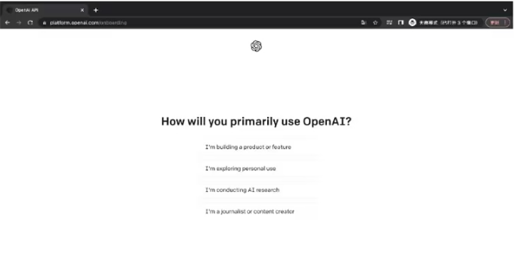

返回
欢迎查看常见问题
智慧服务，让您使用更简单

热门专题ChatGPT-保姆级注册教程
通过图文教程手把手教您注册 OpenAl帐号，最终成功使用 ChatGPT
简介:
ChatGPT 是 OpenAl 公司开发的一种大型语言模型，可用于问答、对话生成、文本生成等多种任务是全球最炙手可热的 AI 工具之一。目前有 GPT-3.5 和 GPT-4 两个版本。
GPT-3.5:无需注册，访问 ChatGPT 官网( https://chat.epenai.com/ )，即可立即体验 GPT-4:需注册账户后付费使用
PS:若有 GPT-4 的使用需求，大家可以查看后面的内容进行注册
1.注册 OpenAl 流程
2.详细图文步骤
1.浏览器搜索 ChatGPT，点击进入官网
2.进入 OpenAl 官网后，可以直接使用GPT- 3.5版本，点击 Sign up 即可进入注册页面
3.输入您的邮箱地址，点击 Continue，然后设置密码，再设置用户名，之后会进入到手机号验证的界面
PS:建议您可以使用第三方平台账户进行登陆，可以直接省去手机号验证的环节
4.若需要手机号验证，推荐使用接码平台，实测印度尼西亚/马来西亚号码可用温馨提醒:注册接码平台后需充值1美元，平台接收验证码可能会有延迟,请自行测试
前往接码平台
5.输入验证码后，会显示一个简单的问卷调查随便选一个即可

6.访问 ChatGPT官网，即可与 ChatGPT 进行沟通
前往 ChatGPT 官网
3.总结
当前不论是青铜或是铂金会员都可以使用ChatGPT注册成功后，您可以将赛盾 VPN 切换回您常用的线路使用 ChatGPT，有任何问题，请详见《ChatGPT 相关错误提示及解决办法》